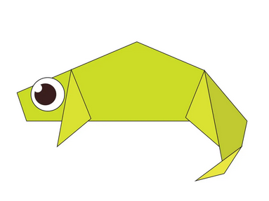
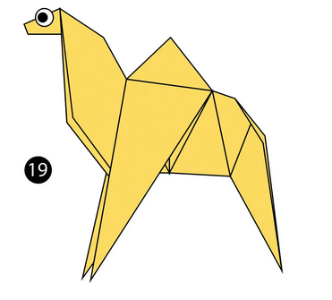
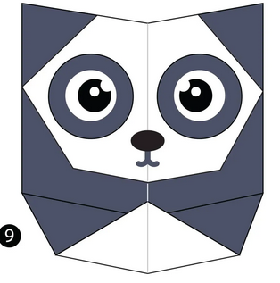
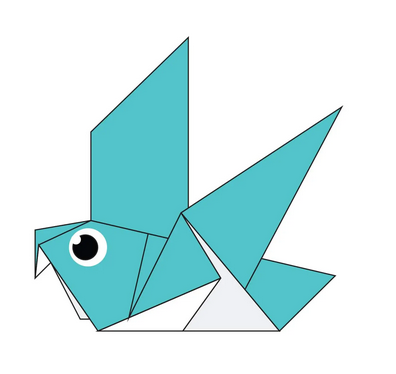
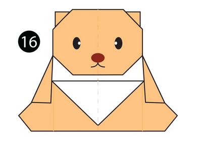
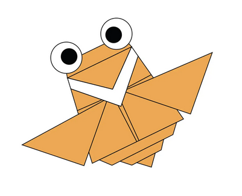

🄾🅁🄸🄶🄰🄼🄸 🄳🄴🅂🄸🄶🄽🅂
Follow Us
About US

Captivating Facts on Chameleon
- ᴄʜᴀᴍᴇʟᴇᴏɴꜱ ᴀʀᴇ ᴀ ʙʀᴀɴᴄʜ ᴏꜰ ᴛʜᴇ ʟɪᴢᴀʀᴅ ɢʀᴏᴜᴘ ᴏꜰ ʀᴇᴘᴛɪʟᴇꜱ.
- ᴛʜᴇʀᴇ ᴀʀᴇ ᴀʀᴏᴜɴᴅ 160 ꜱᴘᴇᴄɪᴇꜱ ᴏꜰ ᴄʜᴀᴍᴇʟᴇᴏɴ.
- ᴄʜᴀᴍᴇʟᴇᴏɴꜱ ʟɪᴠᴇ ɪɴ ᴡᴀʀᴍ ᴠᴀʀɪᴇᴅ ʜᴀʙɪᴛᴀᴛꜱ ꜰʀᴏᴍ ʀᴀɪɴꜰᴏʀᴇꜱᴛꜱ ᴛʜʀᴏᴜɢʜ ᴛᴏ ᴅᴇꜱᴇʀᴛꜱ.
- ᴀʟᴍᴏꜱᴛ ʜᴀʟꜰ ᴏꜰ ᴛʜᴇ ᴡᴏʀʟᴅ'ꜱ ᴄʜᴀᴍᴇʟᴇᴏɴ ꜱᴘᴇᴄɪᴇꜱ ᴀʀᴇ ɴᴀᴛɪᴠᴇ ᴛᴏ ᴍᴀᴅᴀɢᴀꜱᴄᴀʀ.
- ᴄʜᴀᴍᴇʟᴇᴏɴ ᴄʜᴀɴɢᴇ ᴄᴏʟᴏʀ ꜰᴏʀ ᴄᴀᴍᴏᴜꜰʟᴀɢᴇ ʙᴜᴛ ᴛʜɪꜱ ɪꜱ ɴᴏᴛ ᴀʟᴡᴀʏꜱ ᴛʜᴇ ᴍᴀɪɴ ʀᴇᴀꜱᴏɴ. ꜱᴏᴍᴇ ꜱʜᴏᴡ ᴅᴀʀᴋᴇʀ ᴄᴏʟᴏʀꜱ ᴡʜᴇɴ ᴀɴɢʀʏ, ᴏʀ ᴡʜᴇɴ ᴛʀʏɪɴɢ ᴛᴏ ꜱᴄᴀʀᴇ ᴏᴛʜᴇʀꜱ. .
- ᴛʜᴇ ᴄʜᴀᴍᴇʟᴇᴏɴꜱ' ᴇʏᴇꜱ ᴄᴀɴ ʀᴏᴛᴀᴛᴇ ᴀɴᴅ ꜰᴏᴄᴜꜱ ꜱᴇᴘᴀʀᴀᴛᴇʟʏ ᴏɴ 180-ᴅᴇɢʀᴇᴇ ᴀʀᴄꜱ, ꜱᴏ ᴛʜᴇʏ ᴄᴀɴ ꜱᴇᴇ ᴛᴡᴏ ᴅɪꜰꜰᴇʀᴇɴᴛ ᴏʙᴊᴇᴄᴛꜱ ᴀᴛ ᴛʜᴇ ꜱᴀᴍᴇ ᴛɪᴍᴇ. ᴛʜɪꜱ ɢɪᴠᴇꜱ ᴛʜᴇᴍ ᴀ ꜰᴜʟʟ 360-ᴅᴇɢʀᴇᴇ ꜰɪᴇʟᴅ ᴏꜰ ᴠɪꜱɪᴏɴ.

- ᴛʜᴇ ꜱᴄɪᴇɴᴛɪꜰɪᴄ ɴᴀᴍᴇ ꜰᴏʀ ᴀ ᴄᴀᴍᴇʟ ɪꜱ “ᴄᴀᴍᴇʟᴜꜱ”.
- ᴀʟᴛʜᴏᴜɢʜ ᴛʜᴇʀᴇ ᴀʀᴇ ꜱᴛɪʟʟ ᴡɪʟᴅ ᴄᴀᴍᴇʟꜱ ʀᴏᴀᴍɪɴɢ ᴀʀᴏᴜɴᴅ ɪɴ ᴘᴀʀᴛꜱ ᴏꜰ ᴛʜᴇ ᴡᴏʀʟᴅ, ᴄᴀᴍᴇʟꜱ ʙᴇᴄᴀᴍᴇ ᴅᴏᴍᴇꜱᴛɪᴄᴀᴛᴇᴅ ᴀʀᴏᴜɴᴅ 5,000 ʏᴇᴀʀꜱ ᴀɢᴏ.
- ᴛʜᴇʀᴇ ᴀʀᴇ ᴛᴡᴏ ᴛʏᴘᴇꜱ ᴏꜰ ᴄᴀᴍᴇʟꜱ: ᴏɴᴇ ʜᴜᴍᴘᴇᴅ ᴏʀ “ᴅʀᴏᴍᴇᴅᴀʀʏ” ᴄᴀᴍᴇʟꜱ ᴀɴᴅ ᴛᴡᴏ-ʜᴜᴍᴘᴇᴅ ʙᴀᴄᴛʀɪᴀɴ ᴄᴀᴍᴇʟꜱ.
- ᴄᴀᴍᴇʟꜱ ʜᴀᴠᴇ ᴛʜʀᴇᴇ ꜱᴇᴛꜱ ᴏꜰ ᴇʏᴇʟɪᴅꜱ ᴀɴᴅ ᴛᴡᴏ ʀᴏᴡꜱ ᴏꜰ ᴇʏᴇʟᴀꜱʜᴇꜱ ᴛᴏ ᴋᴇᴇᴘ ꜱᴀɴᴅ ᴏᴜᴛ ᴏꜰ ᴛʜᴇɪʀ ᴇʏᴇꜱ.
- ᴘᴇᴏᴘʟᴇ ɪɴ ᴛʜᴇ ᴍɪᴅᴅʟᴇ ᴇᴀꜱᴛ ᴜꜱᴇ ᴄᴀᴍᴇʟꜱ ʟɪᴋᴇ ʜᴏʀꜱᴇꜱ. ᴛʜᴇʏ ʀɪᴅᴇ ᴛʜᴇᴍ ᴀɴᴅ ᴜꜱᴇ ᴛʜᴇᴍ ᴛᴏ ᴄᴀʀʀʏ ᴛʜɪɴɢꜱ.ᴄᴀᴍᴇʟꜱ ᴄᴀɴ ᴄᴀʀʀʏ ᴜᴘ ᴛᴏ 200 ᴘᴏᴜɴᴅꜱ!

- ɢɪᴀɴᴛ ᴘᴀɴᴅᴀꜱ ᴀʀᴇ ʙʟᴀᴄᴋ ᴀɴᴅ ᴡʜɪᴛᴇ ʙᴇᴀʀꜱ. ɪɴ ᴛʜᴇ ᴡɪʟᴅ, ᴛʜᴇʏ ᴀʀᴇ ꜰᴏᴜɴᴅ ɪɴ ᴛʜɪᴄᴋ ʙᴀᴍʙᴏᴏ ꜰᴏʀᴇꜱᴛꜱ, ʜɪɢʜ ᴜᴘ ɪɴ ᴛʜᴇ ᴍᴏᴜɴᴛᴀɪɴꜱ ᴏꜰ ᴄᴇɴᴛʀᴀʟ ᴄʜɪɴᴀ
- ᴛʜᴇꜱᴇ ᴍᴀᴍᴍᴀʟꜱ ᴀʀᴇ ᴏᴍɴɪᴠᴏʀᴇꜱ. ʙᴜᴛ ᴡʜɪʟꜱᴛ ᴘᴀɴᴅᴀꜱ ᴡɪʟʟ ᴏᴄᴄᴀꜱɪᴏɴᴀʟʟʏ ᴇᴀᴛ ꜱᴍᴀʟʟ ᴀɴɪᴍᴀʟꜱ ᴀɴᴅ ꜰɪꜱʜ, ʙᴀᴍʙᴏᴏ ᴄᴏᴜɴᴛꜱ ꜰᴏʀ 99 ᴘᴇʀᴄᴇɴᴛ ᴏꜰ ᴛʜᴇɪʀ ᴅɪᴇᴛ.
- ɢɪᴀɴᴛ ᴘᴀɴᴅᴀꜱ ɢʀᴏᴡ ᴛᴏ ʙᴇᴛᴡᴇᴇɴ 1.2ᴍ ᴀɴᴅ 1.5ᴍ ᴀɴᴅ ᴡᴇɪɢʜ ʙᴇᴛᴡᴇᴇɴ 75ᴋɢ ᴀɴᴅ 135ᴋɢ.
- ᴘᴀɴᴅᴀꜱ ᴅᴏ ɴᴏᴛ ʜɪʙᴇʀɴᴀᴛᴇ. ᴡʜᴇɴ ᴡɪɴᴛᴇʀ ᴀᴘᴘʀᴏᴀᴄʜᴇꜱ, ᴛʜᴇʏ ʜᴇᴀᴅ ʟᴏᴡᴇʀ ᴅᴏᴡɴ ᴛʜᴇɪʀ ᴍᴏᴜɴᴛᴀɪɴ ʜᴏᴍᴇꜱ ᴛᴏ ᴡᴀʀᴍᴇʀ ᴛᴇᴍᴘᴇʀᴀᴛᴜʀᴇꜱ, ᴡʜᴇʀᴇ ᴛʜᴇʏ ᴄᴏɴᴛɪɴᴜᴇ ᴛᴏ ᴄʜᴏᴍᴘ ᴀᴡᴀʏ ᴏɴ ʙᴀᴍʙᴏᴏ!
- 6. ʙᴀʙʏ ᴘᴀɴᴅᴀꜱ ᴀʀᴇ ʙᴏʀɴ ᴘɪɴᴋ ᴀɴᴅ ᴍᴇᴀꜱᴜʀᴇ ᴀʙᴏᴜᴛ 15ᴄᴍ ᴛʜᴇʏ ᴀʀᴇ ᴀʟꜱᴏ ʙᴏʀɴ ʙʟɪɴᴅ ᴀɴᴅ ᴏɴʟʏ ᴏᴘᴇɴ ᴛʜᴇɪʀ ᴇʏᴇꜱ ꜱɪx ᴛᴏ ᴇɪɢʜᴛ ᴡᴇᴇᴋꜱ ᴀꜰᴛᴇʀ ʙɪʀᴛʜ.

- They are incredibly complex and intelligent animals.
- Pigeons are renowned for their outstanding navigational abilities and are highly sociable birds.
- They mate for life, and tend to raise two chicks at the same time.
- Both female and male pigeons share responsibility of caring for and raising young.

- Teddy Bears are stuffed or fur animal in the shape of a bear
- The teddy was named after President Theodore Roosevelt, after he refused to shoot a bear during a 1902 hunting trip.

- They are incredibly complex and intelligent animals.
- Only male cicadas sing.
- Different species have different songs to attract only their own kind.
- Adult cicadas have short lives, usually only lasting a few weeks.
- Cicadas thrive only on plant sap using their piercing, sucking mouth.